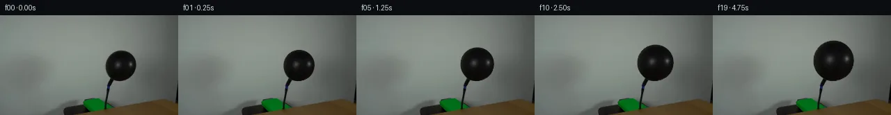

![首帧]()

Round 00
2026-11-05T20:32:02.194167+00:00像素候选变化代码 +154/−0inspection 更新
pixels 0f8b45e308fbd3b1 · code 5dd1e1968034514e
查看本轮 generate.py 真实 diff
--- previous/generate.py
+++ current/generate.py
@@ -0,0 +1,154 @@
+"""PixelWorld case_0037: black balloon on a black hose is inflated behind a wooden table.
+
+Locked camera, 20 frames @ 256x144, 4 fps. Only the balloon body changes: it grows
+from r0=21.93px to r=29.19px over 4.75 s with constant volumetric air flow
+(r ~ (1+k t)^(1/3)), bottom tangent point fixed at the tied neck.
+
+Rendering is purely local pixel math:
+ * frame 0 is a byte-identical copy of first_frame.png;
+ * for t>0 the balloon colour is sampled from the frame-0 balloon in sphere-normal
+ space (p0 = C0 + (r0/r)*(p-C(t))) with a nearest-filled rim band, bilinear;
+ * analytic disk coverage (1 px feather, matched to the source AA edge) is
+ alpha-composited over the untouched frame-0 wall. Everything outside the disk
+ (wall, hose, neck, blue collar, pump, green block, table) stays byte-identical.
+"""
+from pathlib import Path
+import shutil
+import numpy as np
+from PIL import Image, ImageDraw, ImageFont
+from scipy.ndimage import distance_transform_edt
+import artifact_io
+
+CASE = Path(__file__).parent
+N = 20
+H, W = 144, 256
+
+# --- measured geometry of frame 0 (see OBSERVATION.md) -------------------------
+CX, CY0, R0 = 173.08, 72.42, 21.93 # balloon body: 50%-coverage circle
+BOTTOM_Y = 94.35 # fixed tangent point above the tied neck
+FEATHER = 1.0 # edge coverage feather width (px)
+R_AT_5S = 29.5 # radius the physics model reaches at t=5 s
+K = ((R_AT_5S / R0) ** 3 - 1) / 5.0 # constant volumetric-flow constant
+
+f0 = np.asarray(Image.open(CASE / 'first_frame.png').convert('RGB'), dtype=np.float64)
+assert f0.shape == (H, W, 3)
+
+# --- balloon colour canvas: frame-0 body, rim band filled from interior --------
+gy, gx = np.mgrid[0:H, 0:W]
+d0 = np.hypot(gx - CX, gy - CY0)
+deep = (d0 < R0 - 1.1) & (gy < 91.8) # trustworthy interior (excludes neck)
+filled = f0.copy()
+inside = d0 < R0
+if inside.any() and not (inside & deep).all():
+ # nearest deep-interior colour for every inside pixel lacking a direct sample
+ _, (iy, ix) = distance_transform_edt(~deep, return_indices=True)
+ fill_col = f0[iy, ix]
+ need = inside & ~deep
+ filled[need] = fill_col[need]
+
+
+def bilinear(canvas, px, py):
+ """Bilinear sample; coordinates are clamped to canvas bounds."""
+ x0 = np.floor(px).astype(np.int32)
+ y0 = np.floor(py).astype(np.int32)
+ x1 = np.clip(x0 + 1, 0, W - 1)
+ y1 = np.clip(y0 + 1, 0, H - 1)
+ xc = np.clip(x0, 0, W - 1)
+ yc = np.clip(y0, 0, H - 1)
+ wx = (px - x0)[..., None]
+ wy = (py - y0)[..., None]
+ return (canvas[yc, xc] * (1 - wx) * (1 - wy)
+ + canvas[yc, x1] * wx * (1 - wy)
+ + canvas[y1, xc] * (1 - wx) * wy
+ + canvas[y1, x1] * wx * wy)
+
+
+# --- render the 20 frames ------------------------------------------------------
+frames = [f0.astype(np.uint8)]
+for i in range(1, N):
+ t = i * 0.25
+ r = R0 * (1 + K * t) ** (1 / 3)
+ cy = BOTTOM_Y - r
+ d = np.hypot(gx - CX, gy - cy)
+ alpha = np.clip(0.5 + (r - d) / FEATHER, 0.0, 1.0)
+ touched = alpha > 1e-3
+
+ # same-surface-normal source location on the frame-0 balloon
+ s = R0 / r
+ p0x = CX + s * (gx - CX)
+ p0y = CY0 + s * (gy - cy)
+ col = bilinear(filled, p0x, p0y)
+
+ frame = f0.copy()
+ a = alpha[..., None]
+ frame[touched] = (a * col + (1 - a) * f0)[touched]
+ frames.append(np.clip(frame, 0, 255).astype(np.uint8))
+
+frames = np.stack(frames)
… diff truncated; 67 more lines …